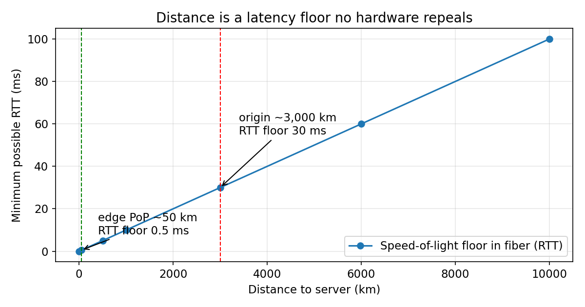
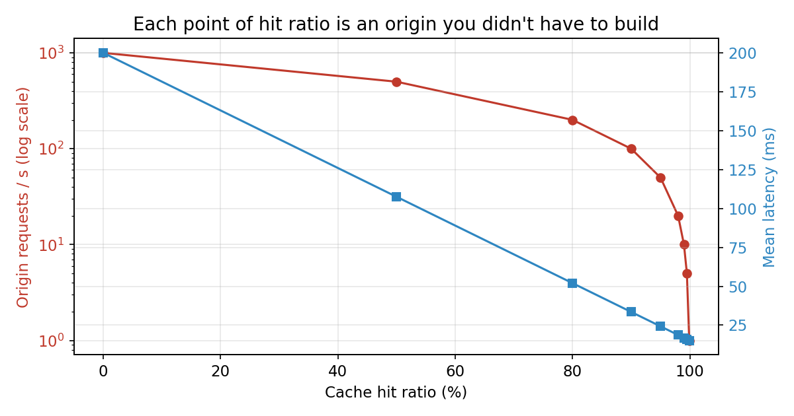
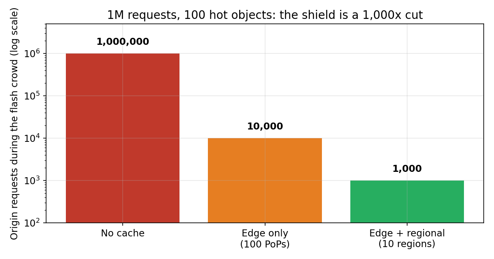
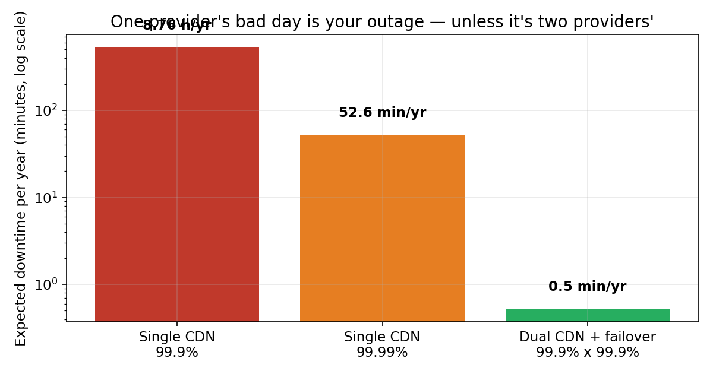

Your server is in Virginia. Your user is in Sydney. Light in fiber travels at roughly 200,000 km/s, which means the round trip alone — before a single byte of your app runs, before a single database query — has a floor of about 100 milliseconds. No amount of money, no faster CPU, no better framework moves that number. It is physics, and physics does not negotiate.
A content delivery network is the admission that you cannot beat physics, so you cheat instead: you put copies of your content close to the reader, and you serve the copy. That is the whole idea. Everything else — edge compute, tiered caches, instant purges, multi-CDN failover — is engineering around the two questions the cheat raises: which copy is fresh, and what happens when the copy is wrong.
This is Part 10 of System Design, Plainly, and the last in the series queue: the network layer that every other part in this series quietly assumed. Load balancing (Part 1) decides which server answers; caching (Part 2) decides what gets remembered; sharding (Part 3) splits the data; queues (Part 4) absorb bursts; CAP/PACELC (Part 5) prices consistency; rate limiting (Part 6) caps abuse; consistent hashing (Part 7) maps keys to nodes; replication (Part 8) copies data; indexes (Part 9) find it fast. The CDN is what puts all of that within 50 km of the person asking.
The ELI5 version
Imagine you run a bakery with one shop in Virginia, and a customer in Sydney orders a croissant. You could fly it over — 100 ms of light-speed floor, plus every delay along the way — or you could have already baked the same croissant that morning in a Sydney bakery and hand it over the counter. The CDN is the Sydney bakery. The "origin" is your Virginia shop, where the recipe lives. The "edge" is the network of local bakeries, each holding copies of the popular items.
Three details make it work. First, the local bakery only stocks what people nearby actually order — that's the cache, and the fraction of orders it can fill locally is the hit ratio. Second, when you change the recipe, every bakery needs the new version — that's invalidation, and getting it wrong means Sydney keeps selling yesterday's croissant. Third, the bakeries talk to each other: a small Sydney shop that runs out asks the regional bakery instead of bothering Virginia — that's a tiered cache, or shield.
How it works: distance is a floor, hit ratio is the lever
Distance is a floor. The round-trip time for light in fiber is 10 microseconds per kilometre. At 50 km — a nearby edge point of presence — the floor is 0.5 ms. At 3,000 km, a cross-country origin, it is 30 ms. At 10,000 km, Sydney to Virginia, it is 100 ms, and that is before queuing, TLS, and your application. The chart is the whole argument for CDNs in one line:

The measured payoff is real, and smaller than the marketing. Chrome field data from Core Web Vitals' November 2026 State of CWV report (141,631 sites with phone field data) puts numbers on it: median time to first byte is 691 ms serving HTML direct from the origin, 521 ms via Cloudflare, 501 ms via Fastly — a 25–28% cut. Sites on Cloudflare pass the good-LCP bar 86% of the time, against 82% for all sites. Worth having; not magic. And three in four sites — 76.7% — still serve HTML direct from the origin. Of the 23.3% that use an HTML edge CDN, 56.5% are Cloudflare, 14.6% CloudFront, 14.1% Fastly, 11.2% Akamai.
Hit ratio is the only number that matters. A CDN's value is the fraction of requests it answers without calling home. Our toy model (1,000 requests a second, an edge hit at 15 ms, an origin miss at 200 ms) shows why every point of hit ratio is worth fighting for:

At 90% hits, the origin still takes 100 requests a second and mean latency is 33.5 ms. At 99%, the origin takes 10 and latency is 16.9 ms. At 99.9%, the origin takes 1 — but latency only drops to 15.2 ms, because the remaining misses are now the tail. The first lesson of CDN tuning: 90% → 99% is a 10× origin cut and a 2× latency cut; 99% → 99.9% is another 10× origin cut and almost nothing on latency. Past 99%, you are buying origin insurance, not user speed. The misses that remain are the ones you cannot cache — personalized pages, uncacheable API calls, the long tail of one-hit objects — and the fix for those is not a bigger cache, it is a different architecture (edge compute, or accepting the origin trip).
The shield is what saves the origin during a launch. One cache layer is not enough, because a flash crowd hits every edge point of presence at once. Take 1,000,000 requests for 100 hot objects inside one TTL window: with no cache the origin eats all 1M; with 100 edge PoPs, each fetches each object once — 10,000 origin requests; add a regional shield of 10 regions and each region fetches each object once — 1,000 origin requests:

That 1,000× cut is the difference between a launch and an outage, and it is why every major CDN sells a tiered architecture — CloudFront's 13 regional edge caches, Cloudflare's tiered caching, Akamai's parent-child hierarchy. The edge is for latency; the shield is for survival.
The state of the art: the CDN stopped being a cache
The market is big and still growing. The CDN market was $27.75 billion in 2025 and is forecast at $31.1 billion in 2026, reaching $89.05 billion by 2035 — a 12.4% compound annual growth rate. Video is roughly two-thirds of downstream internet traffic, and video CDN is the fastest-growing slice at 13.9% CAGR. The money follows the bytes.
The footprint race is over; the compute race is on. The published footprints, as of 2026: Akamai roughly 4,000+ edge locations (deep ISP-embedded deployments, still the most consistent last-mile tail latency for million-viewer live events), Cloudflare 330+ cities on anycast, CloudFront 600+ edge locations plus 13 regional edge caches, Fastly on the order of 100 high-capacity PoPs. In North America and Western Europe, the median latency gap between the big four is now smaller than the gap between a 92% and a 98% hit ratio on your own traffic — which means vendor choice matters less than your cache policy, except in underserved regions where footprint density still decides the p95.
What changed is what runs at the edge. Cloudflare Workers, Fastly Compute, and their equivalents run serverless code — and now AI inference — on the same node that serves the cache. Cloudflare put inference-ready GPUs in more than 180 cities during 2024. The CDN is becoming the place where the request is answered, not just where the answer is stored: authentication, A/B routing, personalization, and small-model inference, all before the origin is ever involved. The cache is still the core; compute is the margin.
The security story is the quiet reason everyone has one. A CDN is also the largest DDoS shield you can rent. Cloudflare reported blocking about 21.3 million DDoS attacks in 2024, up 53% on 2023. Anycast absorbs the flood across hundreds of cities before it reaches your origin, and the WAF sits at the same layer. For most teams, this — not the 170 ms of TTFB — is the reason the CDN line item survives the budget review.
Why it breaks
Invalidation is the hard problem, and it is unsolved in the general case. A cache is a promise that a copy equals the original, and every invalidation mechanism is a way of breaking that promise on schedule. TTLs are the honest version: stale for at most N seconds, and everyone agrees on the bound. Purges are the urgent version: Fastly's sub-second global purge is the industry benchmark, but "sub-second" is the purge starting, not every edge node finishing — and a purge that races a deploy is how users see the new page with the old JavaScript bundle. The two classic failures: purging too little (stale content served for hours) and purging too much (a full-cache clear that turns the next minute into a 1M-request flash crowd against your own origin — the shield exists precisely for this). The disciplined answer is versioned URLs: never mutate an object, publish a new one under a new name, and let the old one expire. Invalidation is then a non-problem for static assets, and the only thing left to purge is HTML — which is why so few sites cache HTML at the edge at all (remember: 76.7% don't).
One provider's bad day is your outage. On November 18, 2025, a malformed Cloudflare bot-management feature file returned 5xx errors worldwide for several hours — one of the largest CDN outages on record, caused not by an attack or a cut cable but by a bad config file pushed to the edge. Availability arithmetic makes the fix obvious: a single provider at 99.9% is 8.76 hours of downtime a year; two independent 99.9% providers with failover is 99.9999%, about 32 seconds a year:

The catch is the word independent. If both CDNs sit behind the same DNS provider, the same origin, or the same config pipeline, the shared part is your real SLA — and multi-CDN failover that has never been tested is a hope, not a plan. Test the failover the way you test a backup: by actually failing over, on a Tuesday, when nothing is on fire.
The cheap insurance nobody enables: serve stale. stale-while-revalidate tells the edge to serve the cached copy while it fetches a fresh one in the background — and, with a long stale window, to keep serving the cached copy when the origin is down entirely. In our toy model, a 3-minute origin outage at 1,000 requests a second with 95% of requests for cached objects: 171,000 requests served stale, 9,000 fail. Without stale serving, all 180,000 fail. It costs one response header. Enable it on everything that can tolerate minutes-old content — which is nearly everything except the checkout page.
The bill is the last trap. CDN pricing is egress pricing, and egress is where the margin hides: per-GB rates that look trivial at 10 GB become the largest line item at 10 PB, and the gap between vendors is often smaller than the gap between your hit ratio this quarter and last. The honest cost model is origin egress avoided plus edge egress paid — and a 5-point hit-ratio improvement usually beats a renegotiated rate card.
Takeaways
- Distance sets a latency floor — 10 µs per km round trip in fiber. The only fix is proximity, and that is what a CDN sells.
- The measured payoff is real but modest: median TTFB 691 ms with no CDN vs 521 ms (Cloudflare) and 501 ms (Fastly) in November 2026 Chrome field data.
- Hit ratio is the lever: 90% → 99% cuts origin load 10× and halves latency; past 99% you are buying origin insurance, not speed.
- A regional shield turns a 1M-request flash crowd into 1,000 origin fetches. The edge is for latency; the shield is for survival.
- Two independent CDNs: 8.76 hours a year of expected downtime becomes 32 seconds — if the failover is tested and nothing is shared.
stale-while-revalidateis free outage insurance. One header, 171,000 of 180,000 requests saved in our toy outage.- Version your static assets and never purge what you can rename. The only thing worth purging is HTML — and three in four sites don't cache that at all.
That closes the System Design, Plainly queue — ten parts, from load balancing to CDNs. The series was the map; the vLLM serving series is the territory, and it continues on the same schedule. If these plain-English breakdowns with real numbers are useful, follow along on dev.to — the next post goes deeper into the serving stack, and the notebooks keep coming with it.
Honesty note: all simulation numbers are this machine's toy-model measurements, not production telemetry; the field figures are cited — Core Web Vitals State of CWV (November 2026, 141,631 sites with phone field data), CDN market sizing (October 2026 report: $27.75B in 2025, $31.1B in 2026, $89.05B by 2035, 12.4% CAGR), vendor footprints and the November 18, 2025 Cloudflare outage as reported in 2026 CDN comparisons. No Meta content, per the standing exclusion.